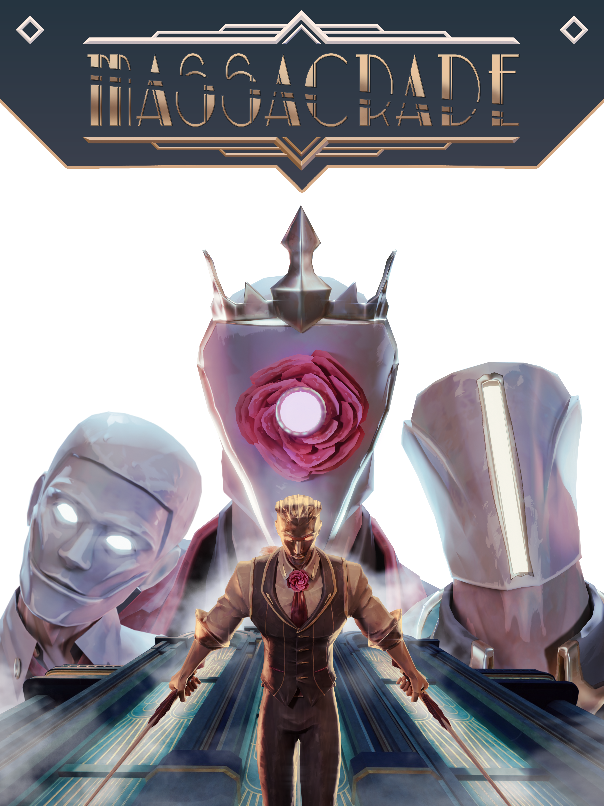

Description not loaded
Massacrade is a First-Person Parkour Melee Slasher set in an elegant city where you take control of Evelyn, a brutal rogue assassin on the run, using her acrobatic movement and combat expertise to escape.
Our goal with this project was to create a Vertical slice with great game feel and visuals, preferring a shorter experience with more depth than a longer Experience that lacks the necessary polish in the given short timeframe of a semester.
Here are some links if you would like to see or try it yourself: Itch.io & Short Walkthrough Video
I worked on this project as my sixth semester project at the University of Applied Sciences Darmstadt.
In our Team of five Bachelor Students and 2 Master Students, I took over the role of a main Programmer and secondary Technical Artist and was responsible for the Enemy Behavior including their Animations from Motion capture and their Cleanup after, General Behavior like the Slow motion implementation, Sound implementation and some player related Actor Components.
I took the opportunity to further develop my Unreal Engine knowledge by creating a Plugin for NPC Vision or use built in Plugins like Unreals Gameplay Ability System or State Trees, all in both C++ and Blueprint.

During my time in this study course I noticed that I enjoy creating editor tools for a project quiet a lot. It was important to me that I not only improve my assets to be more usable by non coders during production, but also create specified tools for my fellow artists and designers.
During my 5th semester Project 'BrotherBlood' I made a simple visual Dialogue Tool in Unity.
I looked into existing tools and decided that they were too complex for my team to just use for the limited functionality necessary and I also wanted to avoid to create all Dialogue with prefabs.
So using Unitys UIToolkit, I created a node based system you can see on the right. The picture at the top shows a dialogue node with the necessary options of dialogue flow for our specific needs. Five values were adjustable: The FMOD event selection, The extra time the text should stay visible after the audio is done, A pause time until the next Node is played, whether the Brother or the Player are talking and lastly the text that should be displayed (The 2 in the example node at the bottom).
The picture below shows how the nodes are connected in one Dialogue Object.
I made two short tools for the Motion Capture cleanup in C++ for Unreal Engine of the sixth semester project 'Massacrade' oh which both turned out to be essential for the mass of cleanup of over 60 used animation used from the Motion Capture recordings.
One tool is a simple loop modifier that changes the end of the animation to lerp into the animations start transform with an optional flag for ignoring the root transform for rootmotion animations.
The other copies the start transforms of one animations bone chain starting from a bone name and copies these transforms into another animations bonechain with a flag to ignore starting bone, which I used to fix all the finger animations as they were not recorded through Motion Capture and I used it for the Snipers posture as well.
Throughout my time in the university and through personal projects I have learned a variety of different tools and methods to create NPC AIs in projects. Be it State Machines, Behavior Trees or Unreal EnginesState Tree for Task Execution, Spatial Query Systems for World Context dependant actions or Utility AI and Goap for Goal determination and their execution plan.
During an elective in my sixth Semester I made a Spatial Query System like Unreal Engines Environmental Query System.
As a functional prototype I used a demo scene with a basic Actor that tries to stay in cover of the moving Camera.
The Blue sphere represents the head of which its center tries to stay in Cover and the yellow spots are possible vantage positions to check if the camera is visible from their position for a potential lean for Line of Sight.
The tests for avaluation are Center Line of Sight, to filter out all visible points, Lean line of sight for vantage, distance to the player and distance to the wall between player and actor.
As visible on the right, the center of the blue sphere is never visible to the camera, Yellow spots are mostly visible and the actor stays close to the wall and as close to the player as possible
In my fifth semester project 'BrotherBlood' we decided for the NPC to always follow the player around and execute some actions themselves. In this particular example on the right, the NPC needs to wait for the player to unlock the elevator to use it without a Navigation link. The elevator connects to different parts of the navmesh and executes its navigation process by giving the navigation manager instructions. This way I was able to implement different Traversal methods like the elevator or destructible obstructions with instructions for the npc to follow. They work independent of another and are only searched through the pathfinding script in a manager object.